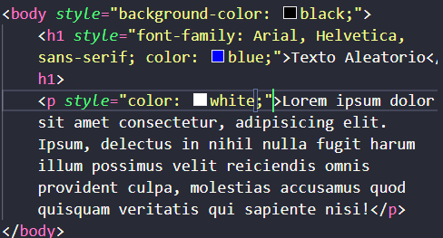
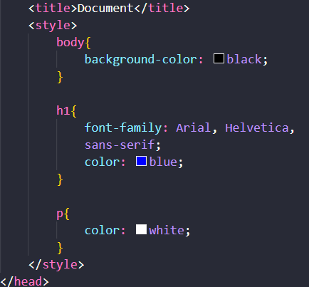
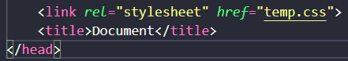
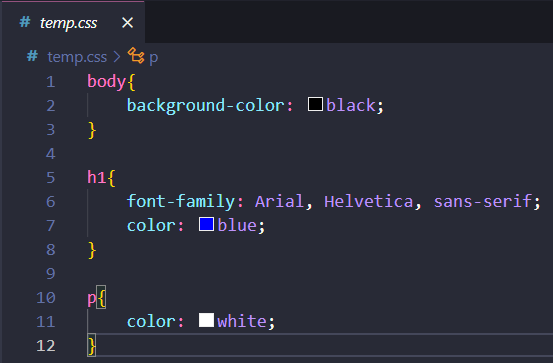
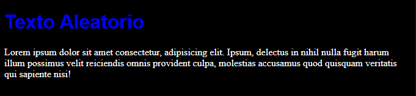

HTML
CSS
JS
Módulo 1
CSS
CSS → Cascading Style Sheets
• É usado para criar o estilo do site;
Estilizando o Site
CSS Inline

CSS Interno

CSS Externo
Parte 1 do código no HTML

Parte 2 do código no CSS

Resultado

Vale lembrar que os 3 modos de usar o CSS resultam nessa mesma estilização